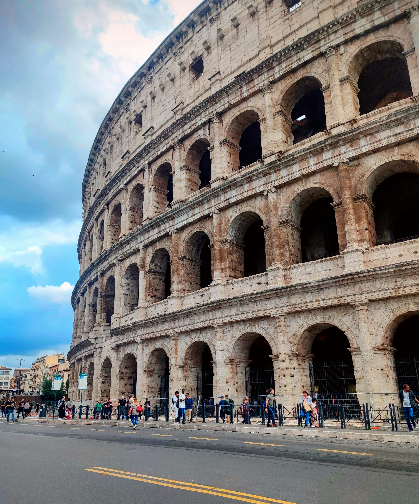

Paris, France
The Eiffel Tower and historic architecture make Paris one of the most visited cities in the world.
Bali, Indonesia
Bali is known for its beaches, temples, and tropical beauty.
Swiss Alps
The Alps offer breathtaking mountain views and outdoor adventure opportunities.
Rome, Italy
Rome is rich in history with landmarks like the Colosseum and Vatican City.

Travel Information
| Destination | Country | Best Time to Visit |
|---|---|---|
| Paris | France | Spring |
| Bali | Indonesia | Summer |
| Swiss Alps | Switzerland | Winter |
| Rome | Italy | Fall |
| Tokyo | Japan | Spring |
Top 5 Reasons to Travel
- Experience new cultures
- See natural wonders
- Try new foods
- Meet new people
- Create lasting memories